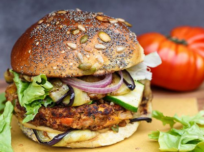
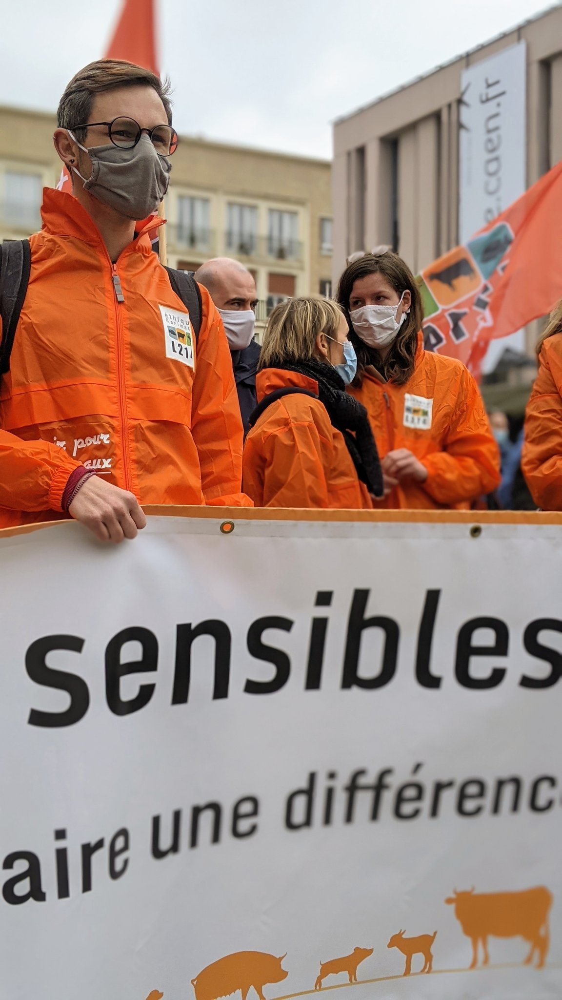

Il n'est pas rare de faire face à un certain cynisme lorsque l'on parle des substituts de produit d'origine animale, comme si reproduire le goût de la viande serait un paradoxe pour quelqu'un de sensible à la cause animale. Ce cynisme traduit un malentendu sur le végétalisme/végétarisme.
La raison la plus souvent mise en avant, pour expliquer un choix de vie de type végétarien/végétalien, est la réduction de l'impact négatif de l'être humain sur son environnement. Que ce soit en termes de souffrance infligée, de pollution, de destruction, etc…
Et ça marche ! Cette démarche est efficace. En mangeant des légumes, on tue moins qu'en mangeant une vache, un poulet, un cochon, un poisson, etc…
Maintenant, faire ce choix de vie n'est pas toujours chose simple . Et c'est là qu'intervient l'idée de produit de substitution.
L'imitation de produit d'origine animale en version végétale est un moyen, comme un autre, de faciliter la transition vers un mode de vie plus respectueux de ce qui nous entoure. Vous avez le choix entre un plaisir gustatif impliquant intrinsèquement de la violence, et un autre qui, potentiellement, est plus en accord avec un mode de vie pacifique. Si vous cherchez à réduire votre impact négatif, l'idée de produit de substitution devient donc ici une excellente idée !

Après, Beyond Meat est une entreprise qui cherche à faire du profit. Elle utilise la publicité, tout comme l'industrie animale et les autres, pour maximiser ses gains. Somme toute, une entreprise qui cherche à faire du profit en vantant une cause menant à une société plus juste, n'est-elle pas, finalement, plus utile au bien commun que celle ne vantant que la qualité du produit qu'elle cherche à vendre?
